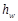
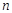
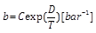
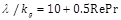

International Journal of Theoretical and Applied Nanotechnology (IJTAN)
ISSN: 1929-1248

Volume 1, Issue 1, Year 2012 - Pages 90-98
DOI: 10.11159/ijtan.2012.014
Modeling Based Investigation of Ultrafine SAPO-34 Core-shell Adsorbent in Cyclic Adsorption Process for Purification of Natural Gas from CO2
Saeed Mahzoon, Shohreh Fatemi*, S. Jalal Hashemi
School of Chemical engineering, College of Engineering, University of Tehran, Enghlab Ave., Tehran, Iran
saeed_mahzoon@alumni.ut.ac.ir; shfatemi@ut.ac.ir; jhahemi@ut.ac.ir
Abstract - Core-shell nano-adsorbents are a novel class of materials where a solid inert material and a selective ultrafine layer are housed in a single particle. In this work, the dynamic adsorption of CH4- CO2 mixture was modelled and studied in the packed bed of conventional and core-shell adsorbents made from SAPO-34, comparatively. The dynamic adsorption model with a packed bed of SAPO-34 fine layer on the inert mullite particles revealed great potential of this kind of adsorbents in increasing the efficiency of the adsorption processes. It was observed that core-shell adsorbent affected on both shape of mass transfer zone and breakthrough time because of decreasing the intraparticle resistance. It is also observed using core-shell adsorbent reduces the useless bed length at the breakthrough time by 22%. The dynamic model was implemented to a four- step cyclic adsorption process of pressure swing adsorption for purification of methane from a mixture of CO2 and CH4 with the so-called core-shell adsorbent and the results of methane recovery and its purity was compared with the PSA model using SAPO-34 particles. It was concluded that core-shell adsorbents in PSA process increases both the purity and recovery of methane by 4% and 17% respectively, compared to the particles of SAPO-34.
Keywords: Core-shell Nano-Adsorbent, Dynamic Adsorption Model, Cyclic Adsorption Process, Pressure Swing Adsorption
© Copyright 2015 Authors This is an Open Access article published under the Creative Commons Attribution License terms. Unrestricted use, distribution, and reproduction in any medium are permitted, provided the original work is properly cited.
Nomenclature
- C: total gas phase concentration, mol/m3
- Ci: gas phase concentration of component i, mol/m3
- : particle average pore concentration of component i, mol/m3
- Cp,i: pore concentration of component i, mol/m3
- Cp,g: gas mixture molar specific heat at constant pressure, J/mol K
- Cv,g: gas mixture molar specific heat at constant volume, J/mol K
- Cs: particle specific heat at constant pressure (per mass unit), J/kg K
- Dax: axial dispersion coefficient, m2/s
- Dm,i: molecular diffusivity of component i, m2/s
- dp: particle diameter, m
- Dp,i: effective macropore diffusivity of component i, m2/s
- dw: bed diameter, m
- hw: film heat transfer coefficient between the gas and wall, J/s m2 K
- hp: film heat transfer coefficient between the gas and particle, J/s m2 K
- ΔHads,i: heat of adsorption of component i, J/mol
- Kf: film mass transfer coefficient, m/s
- kg: gas thermal conductivity, W/m K
- Ni: depletion rate of component i from fluid , mol/m3 s
- P: pressure, Pa
- : particle average solid concentration of component i, mol/Kg
- qi: solid concentration of component i, mol/Kg
- qi*: solid concentration in equilibrium with Cp,i, mol/Kg
- R: particle radial position, m
- Rc: core radius, m
- Rp: particle radius, m
- t: time, s
- Tg: bulk phase temperature, K
- Tp: solid temperature, K
- Tw: wall temperature, K
- u: interstitial velocity, m/s
- yi: mole fraction of component i
- z: axial position, m
Greek letters
- ε: bed porosity
- εp: adsorbent porosity
- λ: thermal axial dispersion coefficient, W/ m K
- μ: bulk gas mixture viscosity, Kg/m s
- ρ: bulk gas mixture density, Kg/m3
- ρs: particle density, Kg/m3
1. Introduction
Because of the undesirable effects of CO2 in gaseous mixtures, separation of carbon dioxide from methane is an important technical challenge in economic and environmental affairs. CO2 is present in atmosphere, natural gas and by-products of industrial processes. The presence of CO2 decreases the energy content of natural gas and because of its acidic property in the presence of water, CO2 causes corrosion in storage and transportation systems. Therefore, according to the increasing trend in consumption of natural gas, containing CH4 as the major component, removal of CO2 has a vital role in the industries dealing with natural gas processing (Baker, 2002).
For the separation of CO2 from natural gas, several technologies, such as absorption, cryogenic distillation, membrane separation, and adsorption, have been used. Among several technologies, adsorption-based methods are promising because of their simple and easy control, low operating and capital investment costs, and superior energy efficiency (Bae et al., 2008).
Gas separation based on adsorption has been well developed, in which the selection of a sound adsorbent is the key for specific separation. Although materials for gas adsorptive separation have been established and a diverse range of useful sorbents are available for CO2 separation, there is still plenty of room to optimize the performance of these materials and investigate a wider range of new sorbents (Li Jian et al., 2011). A variety of solid physical adsorbents have been considered for CO2 capture including microporous and mesoporous materials (carbon-based sorbents such as activated carbon and carbon molecular sieves, zeolites, and chemically modified mesoporous materials), metal oxides, and hydrotalcite-like compounds, amongst others (D'Alessandro et al., 2010). Recently, ilico-alumino-phosphates have been recognized as a new family of zeolitic-like materials that have potential applications in separations, gas storage, and catalysis (Ashraf et al., 2011).
Silicoaluminophosphates (SAPO) called zeo-type molecular sieves, are from ALPOs categories and have similar structure to zeolites except than substitution of Si instead of Al in their cages. SAPO molecular sieves have excellent efficiency in catalytic and separation processes such as adsorption and membrane processes. The kinetic diameter of the gas component is the key parameter in its ability to diffusion into the pores of the adsorbents. Within many types of SAPOs, SAPO-34 with a three-dimensional structure and pore diameter of 0.38 nm is one of the best candidates for selective adsorption of CO2, with 0.33 nm kinetic diameter, from CH4, with 0.38 nm diameter (Ashraf et al., 2010).
Now, various types of column packing are available and one of the new packing materials used is made of core-shell particles. These particles are made of a non-selective solid core surrounded by a porous selective thin layer as the shell (Kostka et al., 2011). Horváth and Lipsky suggested the use of core-shell particles instead of fully porous particles as packing materials for chromatographic columns and demonstrated the value of the concept by reporting important analytical results in the ion-exchange analysis and/or the purification of nucleosides (Guiochon and Gritti, 2011). Ever after, the experimental and theoretical analysis of the efficiency of chromatographic columns packed with core-shell particles were discussed in literatures such as Kostka et al. (2011) and Gritti et al. (2011). Guiochon and Gritti (2011) reviewed the origin, purpose, development and properties of columns packed with core-shell particles to explore their perspectives.
The advantage of inert core adsorbents is increasing density by the incorporation of heavier inert core for stable expansion at high flow rate in expanded bed. These types of core-shell adsorbents have been recently used in expanded bed to capture bio-macromolecules directly from crude particle-containing feedstock (Jahanshahi et al., 2002). Recently, Ashraf Talesh et al. (2011) have reported fabrication of a kind of core-shell adsorbent for CO2 separation from natural gas.
Adsorption process is an economic and effective method with wide usage in separation of gaseous mixtures. As a consequence of this applicative interest, a great amount of work has been devoted to the modeling of these processes such as Siahpoosh et al. (2009) and Zheng et al. (2010). The dynamic mathematical models are required to simulate the gas adsorption processes, mainly to study the behavior of the new adsorbents during adsorption-desorption cycles and optimization purposes. Proper modeling of adsorption units requires good understanding of the simultaneous mass, momentum and heat transfer which occur in the adsorption bed. Modeling of these phenomena needs the simultaneous solution of partial differential equations coupled with algebraic equations. Analytical solutions of the mathematical model are only available when approximations are used; otherwise, numerical solutions should be employed.
Lots of works are done in modeling of dynamic gas adsorption in the packed columns with conventional adsorbents rather than core-shell ones. Li and Xiu (2004) derive analytical solutions to predict breakthrough and elution curves for fixed-bed columns packed with inert core adsorbents regarding linear adsorption isotherm where the axial dispersion, mass transfer and intraparticle diffusion are considered. Shams (2001) modeled the transient behavior of adsorption/desorption from a fixed-bed packed with thin-film-coated spherical particles/hollow spheres when axial dispersion and external mass transfer resistance are negligible.
In this research, the mathematical modeling of the packed bed with core-shell zeolitic particles that have been recently prepared (Ashraf Talesh et al., 2011) is modeled for separation of CO2 from natural gas. The assumptions of the model are axial dispersion bed and variable velocity of gas, with macropore diffusion resistance with nonlinear equilibrium model of binary gas component at the shell side of the particle, with no adsorption capacity at the core side, and non-isothermal conditions. Furthermore, a comparison between the breakthrough curves, purity and recovery derived by model from core-shell adsorbents would be taken place with conventional one to figure out efficiency of the core-shell particles in improvement of CO2 separation from natural gas.
2. Mathematical Modeling
2. 1. Simulation of the Fixed Bed Adsorption
In this model we consider an adsorption column packed with conventional or core-shell particles. The model applied to describe the fixed-bed dynamics is derived from the mass, energy and momentum balances, including the following assumptions:
i. The gas phase behaves as an ideal gas mixture.
ii. The flow pattern is described with the axially dispersed plug flow model.
iii. Total concentration does not vary verses the time.
iv. The internal mass transfer rates are assumed to be governed by multi-component molecular diffusion through macropores.
v. Radial concentration and temperature gradients are negligible.
vi. The particles are spherical and they are packed uniformly into the fixed bed.
vii. The core-shell adsorbent consists of a core of uniform thickness on the spherical inert particle.
viii. The bed wall temperature is considered constant.
Based on the above assumptions, the fixed-bed model is described by the equations given below. The transient material balance for component i of the gas mixture over a differential cylindrical control volume in the adsorption column, like as Fig. (1) yields:
|
|
(1) |
This equation was used to find the distribution of gas composition along the bed length, where where is the axial dispersion coefficient, is the interstitial velocity, is the bed void fraction, z is the axial distance from column entrance and is the source/sink term of component i caused by adsorption/desorption.
The overall mass balance for the bulk gas is given by Eq. (2)
|
|
(2) |
The following equation expresses the component material balance over a spherical control volume in the adsorbent particles:
|
|
(3) |
Where is the pore concentration of component i, and is the solid concentration of component i which is in equilibrium with pore concentration, i.e., is effective pore diffusivity of component i and r is the radial distance of the adsorbent.
is the radius of inert core, and is the total radius of the adsorbent, as illustrated in Fig. (2); for conventional adsorbents, is equal to zero.
Boundary conditions of the equation (3) are:
|
|
(4) |
|
|
(5) |
which appears in equations (1) - (2) was substituted by following equation:
|
|
(6) |
is the density of active adsorbent, is the fractional volume taken up by the shell, and are the average macropore and solid concentration of component i.
Because adsorption is an exothermic process, heat is generated and hence the adsorbent particle temperature varies, then the generated heat is transferred to the gas phase by convection. The following equations were obtained by writing the differential energy balance in the bed:
|
|
(7) |
|
|
(8) |
The above
equations were used to find distribution of pellets and gas phase temperatures along the bed. where is the molar specific
heat at constant volume for the gas phase, is the molar specific
heat at constant pressure for the gas phase, is the thermal axial
dispersion coefficient, is the convective heat
transfer coefficient between the gas and pellets,  is the convective heat
transfer coefficient between the gas and column wall, is the solid specific
heat,  is the adsorption
enthalpy for the component i, at zero coverage, is the bed diameter,
and is the wall
temperature which kept constant.
is the adsorption
enthalpy for the component i, at zero coverage, is the bed diameter,
and is the wall
temperature which kept constant.
Ergun's law is used to estimate locally the bed pressure drop:
|
|
(9) |

and are viscosity and density of gas phase, respectively.
The extended Langmuir-Freundlich isotherm for multi-component adsorption was used to find equilibrium concentrations:
|
|
(10) |
The adsorption equilibrium data of pure carbon dioxide and pure methane on conventional and core-shell SAPO-34 at different temperatures (Ashraf Talesh et al. 2011) were used to drive parameters of isotherm equations. The parameters of single adsorption isotherm were implemented in the extended isotherm for the binary adsorption equilibrium. The constants and  are derived dependent to the temperature and shown in Table (1).
2. 2. Simulation of Cyclic Adsorption
The behavior of the individual steps within the cycle is simulated by varying the boundary conditions of the bed. The boundary conditions describing the four-step cycles are introduced in Table 2. The four steps which makes up each cycle are: adsorption, depressurization, regeneration, and pressurization.
Table 1. Isotherm parameters
|
|
 |
|||||
|
CO2 |
-15.12 |
5975 |
0.088 |
608 |
-10.58 |
3523 |
|
CH4 |
0.8647 |
704.2 |
6.314e-5 |
2155 |
-0.0248 |
324.2 |
Table 2. Boundary conditions for four steps in an adsorption cycle.
|
Boundary |
Z=0 |
Z=L |
|
Adsorption |
||
|
Depressurization |
||
|
Regeneration |
||
|
Pressurization |
*:subscript F indicates the inlet flow in each step
2.3. Model Parameters
The model parameter evaluation is an important aspect included in the basic information required for modelling the adsorption process. The transport parameter values required in the mathematical model are summarized in this section. Molecular diffusivities were calculated by Chapman-Enskog equation (Reid et al., 2001). An average pore diameter of 0.38 nm was considered for SAPO-34 (Hong et al., 2007) and employed for calculating Knudsun diffusivities. Effective pore diffusivities were calculated using Bosanquet relationship (Yang, 1987). The film mass transfer coefficient was evaluated with the following correlation (Delgado et al., 2006):
|
|
(11) |
is Reynolds number on the base of particle diameter, calculated with the superficial velocity and Sc is the Schmidt number of the gas. The axial dispersion coefficient was estimated by the correlation of Wakao et al. (1978). As low Reynolds numbers were used in this work (below 0.45), the value of the stagnant contribution term taken for this correlation has an important effect on the bed dynamics and we selected the value corresponding to an inert bed (0.23) for this parameter, which has previously been observed by other authors who have used this correlation for modelling the fixed-bed adsorption process in the gas phase using similar Reynolds numbers (Delgado et al., 2006):
|
|
(12) |
Where is molecular diffusivity of component i. The viscosity of each pure gas is estimated by the Lucas method, whereas the viscosity of the mixture is evaluated by the Reichenberg method (Reid et al., 2001).
Like the mass axial dispersion coefficient, the one corresponding to thermal axial dispersion was also estimated with the correlation of Wakao et al. (1978) for low Reynolds numbers, assuming a solid thermal conductivity/gas thermal conductivity ratio of 10, resulting in  (Delgado et al., 2006), where Pr is the Prandtl number and is gas thermal conductivity which is calculated by Stiel and Thodes equation (Reid et al., 2001). The enthalpy of adsorption was replaced by 24 and 16 for CO2 and CH4, respectively (Li et al., 2004), heat capacities of the gases are calculated according to the Reid et al., (2001). The value of the wall Nusselt number was set to 5 (Delgado et al., 2006), and finally the film heat transfer coefficient between gas phase in the bed and pellets is evaluated with the following correlations (Dantas et al, 2011):
|
|
(13) |
|
|
(14) |
is the particle Nusselt number. The transport parameter values required in the mathematical model are summarized in Table (3), based on the feed condition.
Table 3. Transport parameter values for feed condition.
|
λ |
(m2/s) |
0.3 |
|
|
hp |
(W/m2.K) |
24 |
|
|
hw |
(W/m2.K) |
12 |
|
|
Cp,g |
(J/mol.K) |
36 |
|
|
|
CO2 |
CH4 |
|
|
Dax |
(m2/s) |
1.3E-5 |
1.3E-5 |
|
Dp |
(m2/s) |
0.8E-7 |
1.1E-7 |
|
Kf |
(m/s) |
0.0053 |
0.0053 |
2.4. Numerical Method
The foregoing models require the numerical solution of a set of partial differential equations accompanied with algebraic equations (overall and component mass balance equations, heat balance and momentum balance equation). The set of differential equations is solved using the method of lines (Schiesser, 1991). In this method, all the spatial derivatives are replaced by the finite difference method, whereas the time derivatives left intact. In fact, this is an explicit time stepping finite difference algorithm in which the time step determined automatically and adaptively by the ODE solver of MATLAB programming. The ODE solver was the ODE23tb that is proper for stiff systems which use crude error tolerances (Kiusalaas, 2005). This solver is an Implicit Rung-Kutta method with a first stage that is a trapezoidal rule step and second stage that is a backward differentiation formula of second order.
3. Verification of the Mathematical Model
In order to validate the developed model, the calculated results were compared with the multi-component experimental data of Ashraf Talesh et al. (2011). In their work, nano-sized core−shell particles containing an inert ceramic core and a thin perm-selective zeotype shell ware studied as a core-shell adsorbent for selective separation of CO2 from methane in natural gas (10% CO2, 90% CH4); and their performance were compared with conventional one. The characteristics of the adsorbents are shown in Table (4). Adsorption experiments were conducted at 298 K and 1 atm pressure with feed flow rate adjusted to 10 (NmL/min) (Ashraf Talesh et al., 2011).
Table 4. Characteristics of the adsorbents.
|
Adsorbent type |
Conventional |
Core-shell |
|
Average particle diameter (mm) |
3 |
3 |
|
Core diameter (mm) |
- |
2.86 |
|
Shell thickness (mm) |
1.5 |
0.07 |
|
SAPO-34 solid density (kg/m3) |
2260 |
|
|
Average SAPO-34 porosity |
0.55 |
|
Fig. (3) shows the breakthrough curves of CO2 and CH4 for conventional adsorbents. Similarly Fig. (4) shows the comparison of calculated results with the experimental break-through curves of CO2 at the outlet of the bed for both conventional and core- shell adsorbents. As it can be seen from these figures, there is a good agreement between the calculated results and the experimental data. (The coefficient of determinations (R2) are 0.998, 0.991 for CO2 and CH4 breakthrough curves, respectively, on conventional adsorbent, and it is 0.979 for CO2 breakthrough curve on core-shell one).
4. Results and Discussion
The developed model can be used as a proper tool for simulation and sensitivity analysis of the adsorption beds with core-shell adsorbents. The results of the developed model are discussed in the following sections.
4.1. Effect of Core-Shell Adsorbent on the Bed Performance
The shape and size of the core-shell adsorbent were the same as those of the conventional particles except that it consists of two parts, the inert core and the active layer coated on the inert part. The effect of core-shell adsorbent on the breakthrough curve of CO2 is presented in fig. (4). Using core-shell adsorbent, influenced both the breakthrough time and shape of the breakthrough curve.
This figure shows that late breakthrough time is achieved by using core-shell adsorbent, also the sharper S shape would be appeared using core-shell adsorbent. By comparison CO2 breakthrough times of conventional and core-shell adsorbents, it could be observed 1.3 times improvement of CO2 breakthrough time using core-shell adsorbent. Usually the breakthrough curves reflect the shape of the mass transfer zone (MTZ). As mentioned core-shell adsorbent makes the curve sharper therefore it is concluded that a shorter MTZ exists inside the bed. It is concluded that the effects of core-shell adsorbent on the breakthrough curve discussed above, is dependent to the decrease in intraparticle diffusion resistance.
Decreasing of useless bed length at breakthrough time is another advantage of using core-shell adsorbents. According to following equation and fig. (5) which describes the loading of the bed at breakthrough time, useless bed length percentages using conventional and core-shell adsorbents are obtained 51.1% and 28.3% respectively.
|
|
(15) |
It is observed that in using conventional adsorbent, approximately half of the adsorbent bed would be useless. While using core-shell adsorbent, the useless bed length at the breakthrough time is reduced by 22%.
Fig. (6) compares desorption curves of conventional and core-shell adsorbents using the model. As shown, the regeneration time of the conventional adsorbent is too long. Analysing the above mentioned figure clarify that the core-shell adsorbent, that means the lower thickness of the active shell, the shorter the regeneration time of the bed. Based on this finding, we can conclude that using inert core adsorbent is an effective way to reduce the regeneration duration that in turn causes a higher productivity of the adsorption column.
4.2. Effect of Core-Shell Adsorbent on the Cyclic Performance
In this section, the simulation results obtained for the PSA process with respect to cyclic performance are presented comparatively in conventional and core- shell nano-adsorbents. As mentioned before, this PSA system undergoes a simple four-step cycle; the four steps making up each cycle are: (1) adsorption, (2) depressurization, (3) regeneration, and (4) pressurization. During the adsorption step, the feed mixture (10% CO2, 90% CH4) flows into the bed at high pressure (PH=10 atm), carbon dioxide continues to adsorb preferentially to adsorbent, and purified methane is released through the bed as the product. In depressurization step the pressure is reduced to low pressure (PL=1 atm) and the adsorbates begin to desorb from the surface of the adsorbent. In regeneration step, the bed is purged with the recycled product to regenerate the adsorbent. In the last step (pressurization) the bed is pressurized up to high pressure with the recycled product and the cycle is allowed to repeat.
The performance of a cyclic process is commonly evaluated according to basic parameters of product purity and product recovery defined, respectively, by:
|
|
(16) |
|
|
(17) |
The values obtained for these simulations at cyclic steady state are shown in Fig. (7). It can be seen that using core-shell nano-adsorbent affected both purity and recovery. Core-shell nano-adsorbent increased both purity and recovery by over 4% and 17% respectively, compared with conventional one. It is worth noting that the simultaneous increasing in purity and recovery is the point of interest in applying these adsorbents which is because of positive effects of core-shell adsorbents on both adsorption and desorption stages compared with conventional adsorbent as discussed in section 4.1.
5. Conclusions
To enhance the separation efficiency of the light gaseous compounds by adsorption, configuration of the active parts of the adsorbent is a critical object; therefore proper designing the adsorbent particles improves the efficiency of the separation and can reduce useless part of the adsorption bed. In this research, it was observed that using a thin layer of the active adsorbent on an inert core enhanced the efficiency of CO2-CH4 separation.
We can conclude that designing and fabricating core-shell adsorbents would be a good idea for the cyclic adsorption process to improve the efficiency of the light gases separation.
References
Ashraf Talesh, S. S., Fatemi, S., Davoodpour, M., Hashemi, S. J., (2011), Preparation of core-shell SAPO-34 adsorbent on ceramic particles; improvement of CO2 separation from natural gas, Separation Science and Technology, 46, 1138–1143. View Article
Ashraf Talesh, S. S., Fatemi, S., Hashemi, S. J., Omrani, P., (2010), Adsorption Properties of Carbon Dioxide and Methane by Synthesized Fine Particles of SAPO-34 Molecular Sieve, Iran. J. Chem. Chem. Engineering 29, 41–49.
Bae, Y. S., Mulfort, K. L., Frost, H., Ryan, P., Punnathanam, S., Broadbelt, L. J., Hupp, J. T., Snurr, R. Q., (2008) Separation of CO2 from CH4 using mixed-ligand metal-organic frameworks. Langmuir 24, 8592–8598. View Article
Baker, R. W., (2002), Future in directions of membrane gasseparation technology, Indian Engineering Chemical Research, 41, 1393–1411. View Article
D'Alessandro, D. M., Smit, B., Long, J. R., (2010) Carbon dioxide capture: prospects for new materials. Angewandte Chemie International Edition 49, 6058–6082. View Article
Dantas, T. L. P., Luna, F. M. T., Silva Jr., I. J., Torres, A. E. B., de Azevedo, D. C. S., Rodrigues, A. E., Moreira, R. F. P. M., (2011). Modeling of the fixed bed adsorption of carbon dioxide and a carbon dioxide-nitrogen mixture on zeolite 13X. Brazilian Journal of Chemical Engineering 28, 533–544 View Article
Delgado, J. A., Uguina, M. A., Sotelo, J. L., (2006) Fixed-bed adsorption of carbon dioxide–helium, nitrogen–helium and carbon dioxide–nitrogen mixtures onto silicalite pellets. Separation and Purification Technology 49, 91–100. View Article
Gritti, F., Leonards, I., Shock, D., Stevenson, P., Shalikar, A., Guiochon, G. (2011), Performance of columns packed with the new shell particles, Kinetex-C18, Journal of Chromatography A, 1218, 1589–1603. View Article
Guiochon, G., Gritti F. (2011), Shell particles, trials, tribulations and triumphs, Journal of Chromatography A, 1218, 1915–1938. View Article
Hong, M., Li, S., Falconer, J.L., Noble, R.D., (2007) Ion-Exchanged SAPO-34 zeolite crystals and membranes. Microporous Mesoporous Materials 106, 140–146. View Article
Jahanshahi, M., Sun, Y., Santos, E., Pacek, E., Franco, T. T., Nienow, A., Lyddiatt, A. (2002), Operational intensification by direct product sequestration from cell disruptates-Application of a pellicular adsorbent in a mechanically integrated disruption-fluidized bed adsorption process, Biotechnology and bioengineering 80, 201–212. View Article
Kiusalaas, J., (2005) Numerical Methods in Engineering with MATLAB. Cambridge University press. View Article
Kostka, J., Gritti, F., Kaczmarski, K., Guiochon, G. (2011), Modified equilibrium-dispersive model for the interpretation of the efficiency of columns packed with core shell particle, Journal of Chromatography A., 1218, 5449–5455. View Article
Li Jian, R., Ma, Y., McCarthy, C., M., Sculley, J., Yu, J., Jeong, H.K., Balbuena, P.B., Zhou, H.K., (2011). Carbon dioxide capture-related gas adsorption and separation in metal-organic frameworks. Coordination Chemistry Reviews 255, 1791–1823. View Article
Li, P., Xiu, G., Rodrigues, A. E., (2004), Modeling breakthrough and elution curves in fixed bed of inert core adsorbents: analytical and approximate solutions, Chemical Engineering Science 59, 3091–3103. View Article
Li, S. G., Falconer, J. L, Noble, R. D., (2004) SAPO-34 membranes for CO2/CH4 separation. Journal of Membrane Science, 241, 121–135. View Article
Reid, R. C., Prausnitz, J. M., Poling, B. E., (2001) The properties of gases and liquids, 5th ed., McGraw-Hill, New York.
Schiesser, W. E., (1991) The Numerical Method of Lines. Academic Press, California, USA.
Shams, K. (2001), Sorption dynamics of a fixed-bed system of thin-film-coated monodisperse spherical particles/hollow spheres, Chemical Engineering Science 56, 5383–5390. View Article
Siahpoosh, M., Fatemi, S., Vatani, A. (2009), Mathematical modeling of single and multi-component adsorption fixed beds to rigorously predict the mass transfer zone and breakthrough curves, Iran. J. Chem. Chem. Engineering 28, 25–44. View Article
Zheng, X., Liu, Y., Liu, W. (2010), Two-Dimensional modeling of the transport phenomena in the adsorber during pressure swing adsorption process, Indian Engineering Chemical Research 49, 11814–11824. View Article
Wakao, N., Kaguei, S., Nagai, H., (1978). Effective diffusion coefficients for fluid species reacting with first order kinetics in packed bed reactors and discussion on evaluation of catalyst effectiveness factors. Chemical Engineering Science 33, 183–187. View Article
Yang, R.T., (1987). Gas separation by adsorption processes. Butterworth's, Boston.